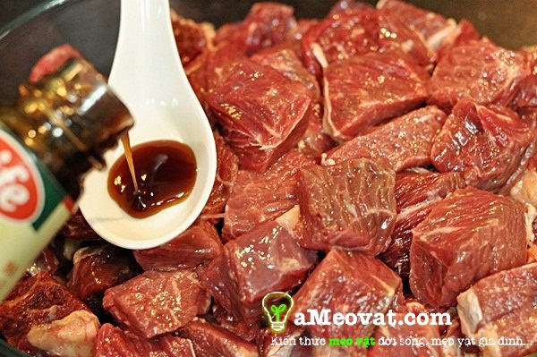
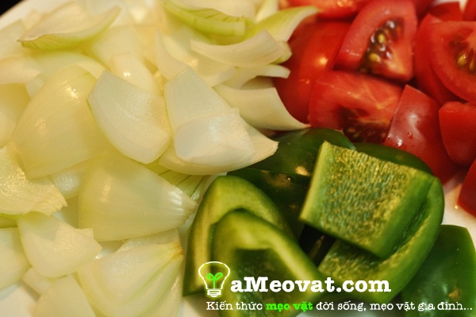
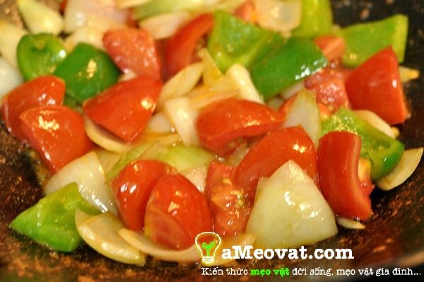
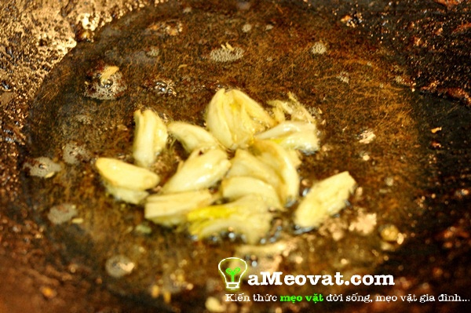
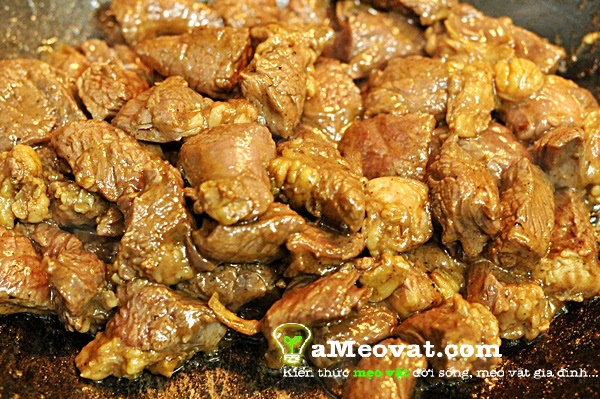

Thịt bò rửa sạch thái vuông cỡ 3cm x 3cm, sau đó ướp với 1 thìa canh dầu hào, 1 thìa canh dầu olive, 1 thìa cà phê mì chính cộng với 1 thìa cà phê gia vị trộn đều thịt bò lên và để sang một bên cho thịt bò thấm đều gia vị.

Bước 2: Chuẩn bị ớt, hành tây, cà chua
Rửa sạch ớt, hành tây và cà chua, thái ớt, hành tây thành miếng vuông hình quân cờ, còn cà chua bổ cau.

Bước 3: Chuẩn bị khoai tây và chiên vàng
Khoai tây bạn làm sạch vỏ, thái từng miếng nhỏ hình sợi dài. Sau đó bạn bắt chảo dầu lên chiên cho vàng đều.
Bước 4: Xào hành tây, ớt với cà chua
Bắt chảo lên bếp cho ít dầu vào và tiến hành xào hành tây và ớt. Sau khoảng 2 phút bạn nhớ cho cà chua vào tránh cà chua bị nhừ quá. Sau đó nêm nếm gia vị vừa ăn, kế đến trút ra một cái đĩa.

Bước 5: Phi thơm tỏi
Bắt tiếp 1 cái chảo lên bếp cho dầu vào, khi chảo dầu nóng lên cho tiếp tỏi vào phi tỏi cho thơm.

Bước 6: Xào thịt bò
Cho thịt bò vào xào nhanh khoảng 3-4 phút với lửa lớn. Đây là bước quan trong của cách làm bò lúc lắc nhằm đảm bảo cho thịt bò không chín quá mất độ mềm mại của thịt bò.

Bước 7: Xào thịt bò với rau củ và trình bày rồi thưởng thức
Sau khi thấy thịt bò săn chắc và chin đều. Bạn cho rau củ vào đảo đều thêm 2 phút thì tắt bếp.Cuối cùng, bạn lấy một cái đĩa lớn ra chia làm 2 phần, một bên cho thịt bò ra, một bên bạn để khoai tây vừa chiên giòn lên hoặc bạn có thể cho thêm bánh mì lên đãi tùy theo khẩu vị ăn của từng người.